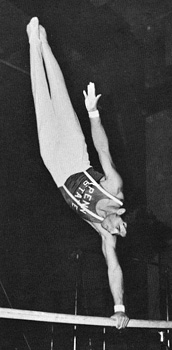

Marshall Avener (USA)
1973 NCAA AA Champion
1975 Pan American Games V Bronze Medalist
Two-Time Olympian

Avener was born Brooklyn, New York, and grew up in nearby Long Island. He played Little League baseball but took up gymnastics in 7th grade after being "astounded" by the acrobatics he saw in the movie "Trapeze." He received a scholarship to Penn State University, majored in Speech, and won the 1973 NCAA all-around title for the Nittany Lions. He competed in two Olympics and worked for several years as an assistant coach to the Penn State women's team (with his then-wife Judi). He moved to Florida in the late 1980s and currently is creative director for Rosebud Productions in Boca Raton.
Competition Results
1967
Jr. National AAU Championships: 4th AA
NY State High School Inter-Sectional Championships: 1st Team, 1st AA
1968
NY State High School Championships: 2nd Team, 1st AA, 1st PH, 1st PB
1969
NY State PHSAA Championships: 1st AA, 1st HB
1970
EIGL Championships: 1st Team, 2nd AA
NCAA Championships: 3rd AA, 3rd V
Penn State-Bulgaria Dual Meet: 1st Team, 3rd AA, 3rd PH, 4th FX, 4th V,
5th PB, 5th HB
Temple-Penn State: 2nd Team, 3rd AA
World Championships: 7th Team, 58th AA
1971
NCAA Championships: 7th PB
Riga International: 15th AA
ROM-USA Dual Meet: 6th AA
USA-USSR Dual Meet: 2nd Team, 3rd AA
1972
US Olympic Trials: 5th AA
USA-HUN Dual Meet: 1st AA
USA-JPN Dual Meet: 3rd PH, 4th V, 5th R, 6th HB
1973
NCAA Championships: 2nd Team, 1st AA, 3rd V, 3rd PB, 5th R, 6th PH
USA-HUN Dual Meet: 1st Team, 1st AA
USA-SUI Dual Meet: 10th AA
USGF National Championships: 1st AA, 1st PH, 1st PB, 2nd R
1974
Mardi Gras Invitational: 1st AA
US World Trials: 14th AA
USA-POL Dual Meet: 5th AA
USGF National Championships: 4th AA, 1st PH
1975
Mardi Gras Invitational: 2nd AA
Pan American Games Trials: 3rd AA
Pan American Games: 5th AA, 3rd V
1976
Mardi Gras Invitational: 2nd AA
Moscow News: 12th AA
Riga International: 7th AA
Third Olympic Qualifying Competition: 1st Team, 8th AA
US Olympic Trials: 5th AA
Olympics: 7th Team, 43rd AA (prelims)
This page was created on December
17, 2000 and was last updated on October 11, 2019.
© Gymn Forum